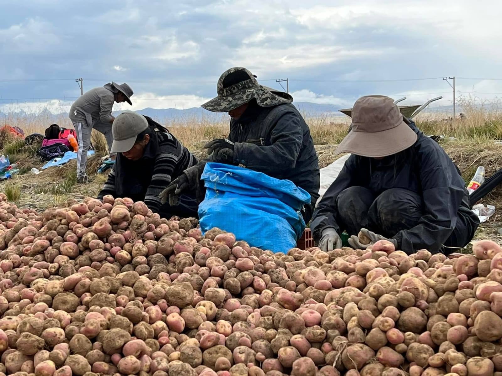
01 / PRODUCCIÓN
Agricultura
El trabajo agrícola está relacionado con la preparación de la tierra, la siembra, el cuidado de los cultivos y la cosecha. Las prácticas concretas dependen de las familias y las condiciones locales.
NUESTRAS RAÍCES · NUESTROS SABERES
Conoce las actividades cotidianas, los conocimientos y las expresiones culturales que forman parte de la vida de las comunidades.
Descubrir nuestras raíces ↓SABERES COMPARTIDOS
Los conocimientos sobre la tierra, los animales, los alimentos, la música y la convivencia se transmiten de una generación a otra. Esta página permite documentar esas experiencias y compartirlas con quienes desean conocer el Ayllu Viluyo.

El trabajo agrícola está relacionado con la preparación de la tierra, la siembra, el cuidado de los cultivos y la cosecha. Las prácticas concretas dependen de las familias y las condiciones locales.
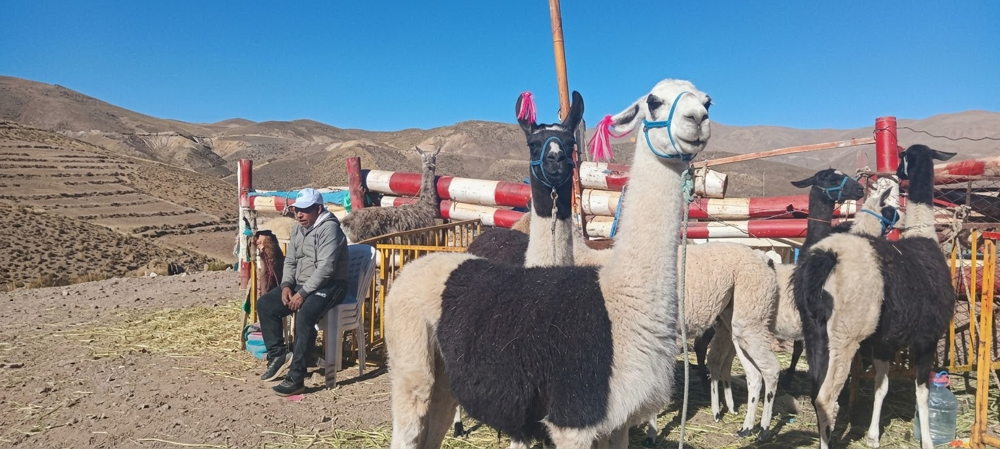
La crianza y el cuidado de animales forman parte de las actividades productivas de distintas comunidades del altiplano.
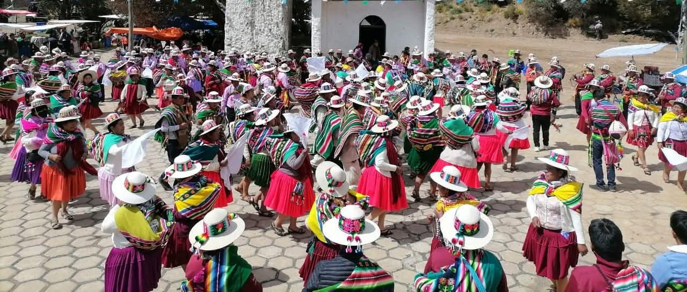
La danza reúne movimiento, vestimenta, música y participación colectiva durante encuentros y celebraciones.
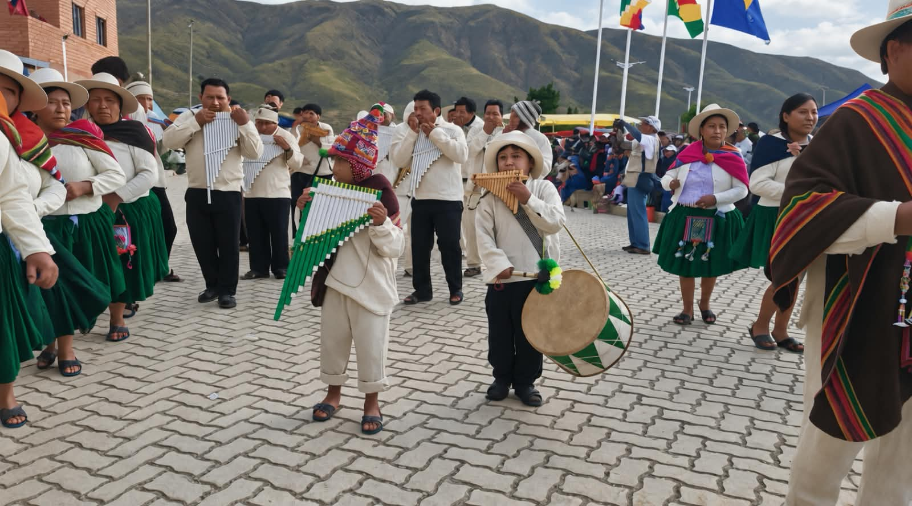
Las melodías y los instrumentos acompañan reuniones, celebraciones y expresiones culturales de la región.
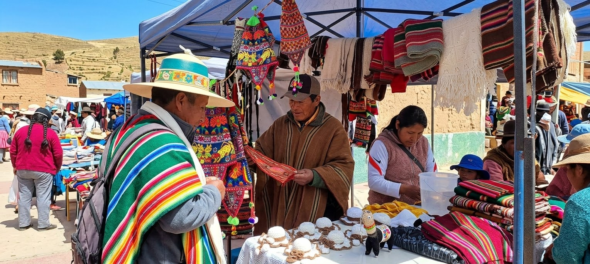
Los tejidos y trabajos manuales reflejan técnicas, creatividad y conocimientos que pueden aprenderse en familia.
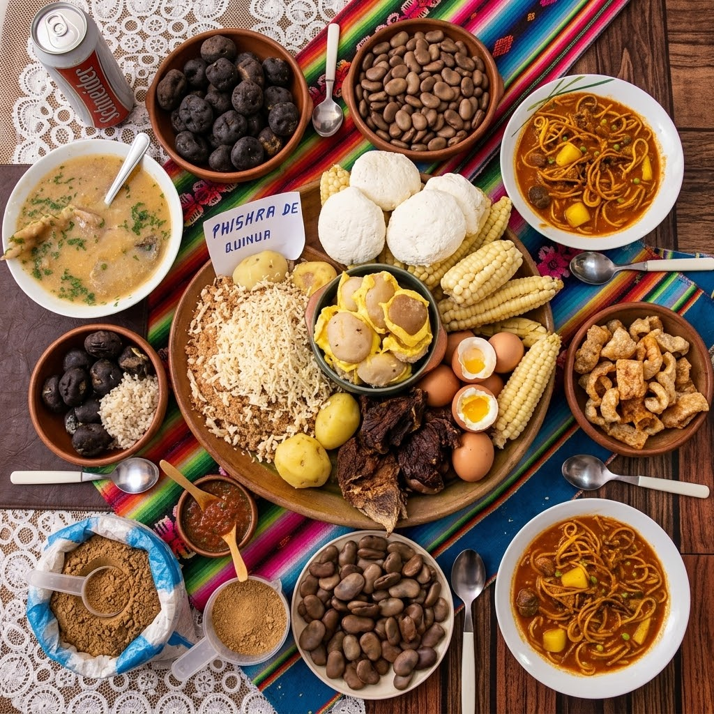
Las comidas regionales reúnen ingredientes, formas de preparación y recuerdos que se comparten en el hogar.
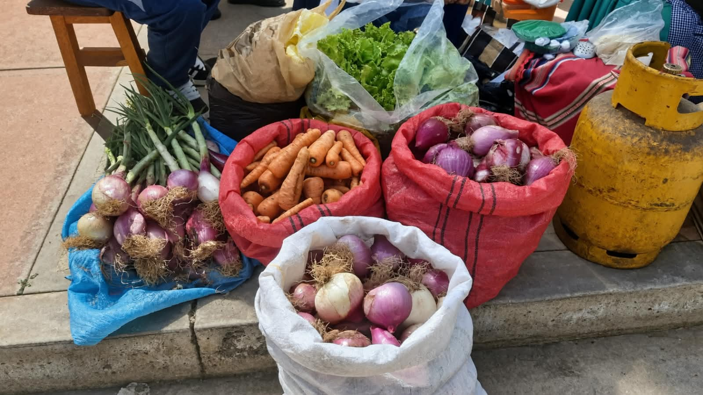
Las ferias permiten ofrecer productos, encontrarse con otras familias e intercambiar experiencias y conocimientos.
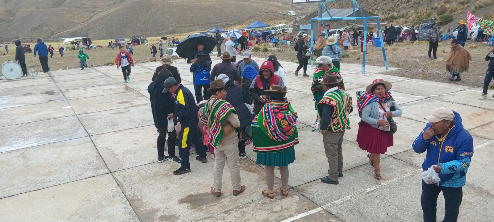
Las reuniones y formas de coordinación permiten conversar sobre necesidades, responsabilidades y actividades comunes.
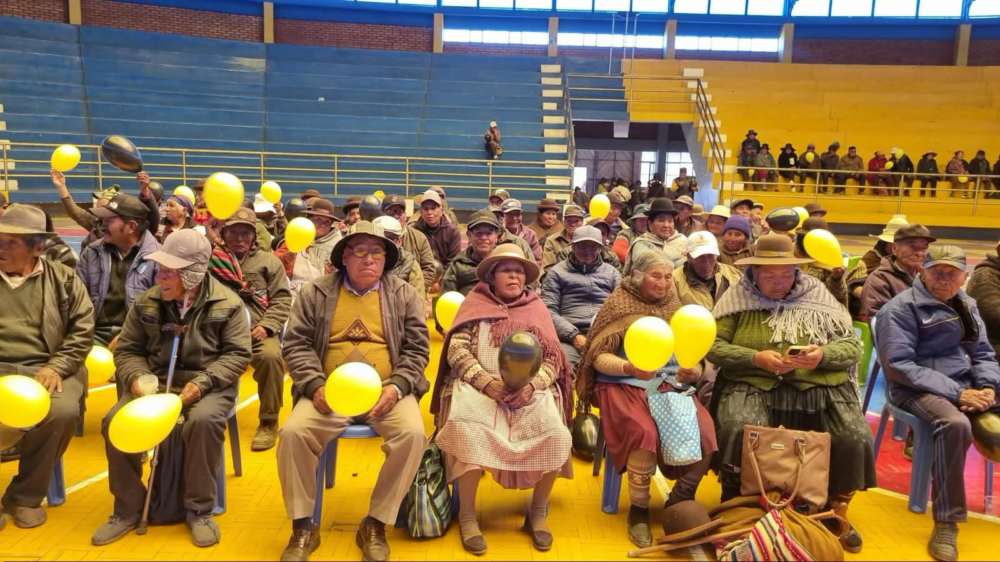
Las experiencias de las personas mayores ayudan a conocer cómo era la vida antes y qué cambios recuerdan las familias.
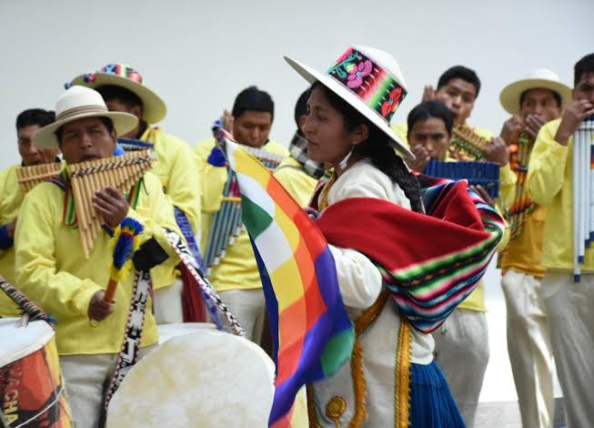
Las prendas y accesorios pueden expresar gustos, pertenencia, ocasiones especiales y técnicas textiles de cada lugar.
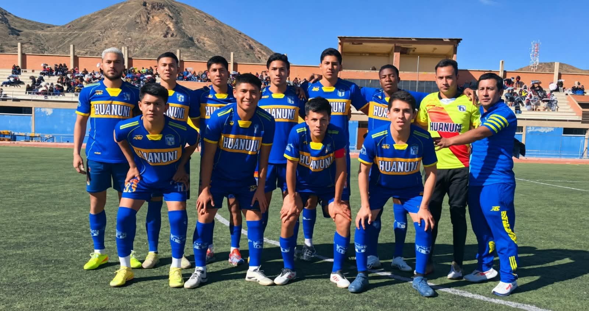
Las actividades deportivas pueden favorecer la participación, el compañerismo y la convivencia entre habitantes.
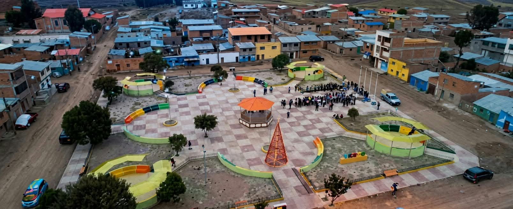
Los caminos, paisajes, fuentes de agua y lugares conocidos por los habitantes también forman parte de la memoria comunitaria.
UN LEGADO COMPARTIDO
El portal puede incorporar fotografías de los propios habitantes para que las nuevas generaciones conozcan sus raíces.
Conocer las comunidades →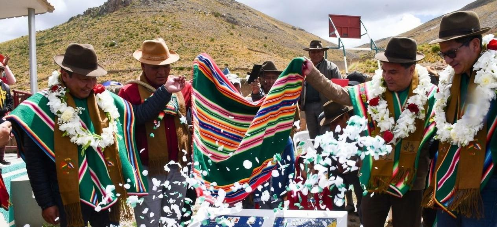